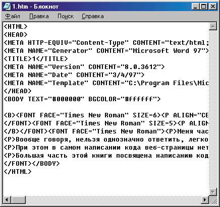

|
|
|
|
1.5. Обзор программ для создания веб-страниц
Простейшие средства создания веб-страниц
В предыдущем разделе мы рассмотрели программы, предназначенные для просмотра веб-страниц. Теперь, прежде чем приступить непосредственно к их созданию, давайте рассмотрим, какие программы мы сможем для этого использовать.
Как уже говорилось выше, веб-страницы кодируются на языке гипертекстовой разметки — HTML. Вообще говоря, чтобы написать HTML-файл, достаточно иметь любой текстовый редактор, лишь бы он умел не добавлять в текст свои специальные символы. Самый простой вариант — это редактор Notepad (Блокнот), входящий в стандартную поставку Windows (рис. 1.7). Собственно говоря, это именно то, что нужно, — простейшая программа, сохраняющая написанный текст именно в том виде, в котором он был введен, и ничего лишнего. (Тем, кто не работает под Windows, в качестве замены Блокноту подойдет почти “все что угодно”: Edit — для MS-DOS, vi или jed — для Linux, Kedit — для Linux/KDE и т. д.)

Рис. 1.7. Код HTML в текстовом редакторе Блокнот
Однако в очень простых текстовых редакторах типа Блокнота весь HTML-текст приходится писать вручную, а многим хотелось бы какую-то часть работы автоматизировать. Учитывая это желание, разработчики создали специализированные средства, призванные облегчить труд веб-программиста (как иногда называют тех, кто пишет код HTML, в отличие от веб-дизайнеров, которые придумывают внешний вид и иногда даже пытаются воплотить его, используя программы работы с графикой). Давайте сначала кратко опишем несколько простых программ, а потом остановимся на лучших из них.
Веб-редактор TextPad
Итак, начнем. Тем, кто предпочитает набирать код HTML вручную, но кому не хватает функциональности Блокнота и подобных ему программ, можно посоветовать программу под названием TextPad, которую можно загрузить, обратившись по адресу www.textpad.com. Эта программа по сути весьма похожа на Блокнот, однако разработчики специально предусмотрели некоторые удобства для того, чтобы писать код HTML (а также языков Java, С, C++, Perl и еще некоторых). Это выражается в том, что при написании HTML -документа все теги автоматически подсвечиваются синим цветом, их атрибуты — темно-синим, а значения атрибутов — зеленым (цвета можно настроить по собственному желанию, так же, как и шрифт). Это очень удобно. К примеру, если автор случайно ошибется в имени тега или атрибута, то оно останется черным, и он сразу поймет, что здесь что-то не то. Правда, проверка не является “ интеллектуальной”: программа может спокойно “разрешить” приписать тегу какое-либо свойство, которого у него в принципе быть не может (спокойно подсвечивает абракадабру типа <BR ALIGN="top"> или </BR> ).
В отличие от Блокнота, TextPad — редактор многооконный. В нем можно открыть сразу несколько документов и работать, легко переключаясь между ними с помощью списка в левой части окна или вкладок в нижней части.
Веб-редактор TextPad позволяет автоматизировать набор многих тегов. Если не хочется набирать их вручную (многие этого не любят просто из-за того, что приходится переключаться на латинский шрифт), то обратите внимание на левую нижнюю часть окна программы. Там приведен список наиболее распространенных HTML-тегов, которые можно вставлять в свой основной текст двойным щелчком мыши. Правда, в списке указаны не сами теги, а их описание. Например, чтобы вставить тег <BR> , нужно выбрать из списка пункт Block > Break Line. Однако к этому быстро привыкаешь. Почти все пункты списка вставляют теги вместе с закрывающим парным тегом. Например, если выбрать пункт Block > Preformatted, в текст автоматически будут добавлены теги и <PRE> и </PRE> . Некоторые пункты добавляют сразу целые блоки-заготовки. Если, к примеру, выбрать пункт Table (Таблица), в текст будет вставлен такой код:
<TABLE ALIGN="left" BORDER=0 CELLSPACING=0 CELLPADDING=0 WIDTH="100%">
<TR ALIGN="left" VALIGN="middle">
<TH></TH>
<TH>?</TH>
<TR ALIGN="left" VALIGN=middle">
<TD> ? </TD>
<TD> ? </TD>
</TABLE>
Значения этих тегов и их атрибутов мы рассмотрим позже, а пока обратим внимание на то, что кроме списка тегов TextPad предоставляет нам также возможность выбирать из списка специальные символы (список HTML Characters), а также, если потребуется, любой управляющий символ, например символы псевдографики DOS и другие. Те, кто часто вводят какие-либо последовательности символов, что при написании веб-страниц не редкость, могут облегчить свою задачу, записав в TextPad соответствующие макросы. Для записи макроса надо нажать комбинацию клавиш CTRL+SHIFT+R (или выбрать из меню Macros пункт Record). При этом начнется запись макроса, то есть все последующие действия будут запомнены. Чтобы закончить запись, надо снова нажать комбинацию клавиш CTRL+SHIFT+R, после чего присвоить имя файлу макроса, а также дать название для представления макроса в меню. Здесь можно также дать, если нужно, краткое описание макроса и указать имя его автора. После нажатия на кнопку ОК название макроса появится в меню Macros. Выбрав его, можно ввести сразу всю заданную последовательность символов.
Для удобства отладки можно установить флажок в пункте Line Numbers (Нумерация строк) в меню View (Вид), — в этом случае все строки текста будут пронумерованы. Хочется отметить, что если в меню Configure (Настройка) включен пункт Word Wrap (Перенос по словам) для автоматического переноса концов длинных строк в видимую часть экрана, то каждая такая длинная строка все равно будет нумероваться одним номером, а не двумя или тремя (кстати, такая нумерация почему-то недоступна в замечательной программе Homesite, о которой речь пойдет ниже). А если в меню View (Вид) включить флажок Visible Spaces (Отображать пробелы), то можно увидеть на экране и “невидимые символы”, такие, как пробелы, символы табуляции и прочие.
В программе TextPad можно легко сравнить два файла, выбрав из меню Tools (Сервис) пункт Compare Files (Сравнить файлы). А если есть два (или более) похожих файла, в некоторые местах которых надо внести изменения, удобно использовать функцию Synchronize Scrolling (Одновременная прокрутка) из меню Configure (Настройка). В этом случае можно открыть сразу несколько файлов, например, выбрав из меню Windows (Окна) пункт Tile Vertically (Расположить по вертикали), и тогда при прокрутке одного из них другие прокручиваются синхронно. Среди других полезных функций программы TextPad стоит отметить возможность автоматической смены клавиатурного регистра командой Edit >
Change Case (Правка > Сменить регистр), автоматического копирования в буфер слова или строки, на которой находится курсор, с помощью команд Edit ” Cut Other (Правка > Вырезать) и Edit > Сору Other (Правка > Копировать), а также функцию проверки орфографии Tools > Spelling (Сервис > Правописание). И, конечно, здесь присутствует возможность просмотра созданного файла в броузере View > In Web Browser (Вид > В броузере).
Веб-редактор Arachnophilia
Завершив краткий обзор возможностей программы TextPad, давайте рассмотрим другую программу для написания .HTML-кода — Arachnophilia, которую можно получить по адресу www.arachnoid.com/arachnophilia.
Как и в предыдущем случае, программа автоматически подсвечивает синим цветом теги и атрибуты, а значения атрибутов — зеленым, что улучшает зрительное восприятие, хотя проверка правильности тегов и отсутствует. Зато если случайно забыть закрыть тег, то все последующее содержимое файла подсветится бордовым цветом, так что ошибка сразу бросится в глаза. В программе Arachnophilia предусмотрена автоматизация ввода тегов HTML. В нижней части окна имеются кнопки, каждая из которых открывает соответствующую кнопочную панель. На этих панелях расположены кнопки для быстрого ввода тегов. Например, если нажать кнопку Styles (Стили), то откроется панель управления, содержащая кнопки для ввода тегов форматирования текста . Нажатие на любую из них вводит тег или блок-заготовку. Например, после нажатия на кнопку BR в тексте появится тег <BR>, а после нажатия на кнопку HR — появится сразу целая заготовка: <HR WIDTH="95%" ALIGN=CENTER>.
Нажатие некоторых кнопок вызывает появление диалоговых окон. Например, нажав на кнопку Color (Цвет), можно открыть стандартное диалоговое окно выбора цвета, а с помощью кнопки TableWiz (Мастер таблиц) открывают диалоговое окно Table Wizard (Мастер таблиц), средствами которого можно предварительно задать количество строк и столбцов в таблице, а также определить ее ширину, цвет линий и некоторые другие параметры .
Отличительной особенностью программы является возможность легкого просмотра веб-страницы в различных броузерах, для чего в меню Preview (Предварительный просмотр) предусмотрен пункт Identify Browser (Указать Лроузер). Здесь можно назначить до шести различных броузеров, в каждом из которых легко открыть создаваемый HTML-файл для просмотра, даже не сохраняя его на диске.
Однако самым замечательным свойством программы, пожалуй, является функция Instant View (Немедленный просмотр), которая доступна в меню Preview (Предварительный просмотр). Если она включена и внутренний броузер, который также имеется в программе, открыт, то все изменения, вносимые в текст HTML, немедленно отображаются на экране! Правда, в некоторых случаях, программа не успевает за вводом данных и изображение в окне броузера может исчезать. Но не волнуйтесь, а введите следующий символ, и изображение снова появится.
В программе Arachnophilia существует множество дополнительных полезных функций. Например, в меню Selection (Фрагмент) есть команда Find/Replace/Count (Поиск/Замена/Пересчет), которая позволяет быстро найти или заменить нужные слова в выделенной области, что часто очень выручает при создании веб-страниц. Команда Tag Delimiters (Ограничители тегов) из того же меню позволяет преобразовать угловые скобки, являющиеся общепринятыми ограничителями тегов HTML, в специальные символы < и >, что необходимо, когда надо показать код HTML на самой веб-странице. Можно также осуществить обратное преобразование. В этом же меню есть команда Strip all HTML tags (Скрыть теги HTML), с помощью которой можно быстро освободить текст от HTML-тегов, например, для переноса его в другую программу. Программа Arachnophilia, кстати говоря, способна читать и записывать файлы формата RTF(Rich TextFormat). При открытии RTF-файла предлагается конвертировать его в формат HTML, но его можно редактировать и в обычном виде.
Интересно, что программу Arachnophilia 4.0 можно загрузить как в полном виде (это установочный файл размером полтора мегабайта), так и в сокращенном (1 Мбайт), если в системе установлены необходимые библиотеки. Можно также загрузить только исполняемый файл, а остальное дозагру-жать по мере необходимости.
Веб-редакторы типа WYSIWYG
Мы рассмотрели программы, в которых основной упор при создании веб-страниц сделан на написание HTML-коца. вручную. Однако существуют программы, позволяющие редактировать веб-страницы как бы в режиме WYSIWYG.
На самом деле обычно из этого ничего хорошего не получается. Это связано с тем, что автор создает не код, а оформление страницы, после чего программа автоматически подбирает для нее код, который соответствует тому, что задумал автор. Обычно на странице оказывается много совершенно лишнего кода. Он может оставаться, например, от отмененных проб, не говоря уже о том, что программа может сама вставлять комментарии, которые только замедляют загрузку страницы.
Эффективно управлять оформлением страницы таким способом тоже не удается. Поэтому мы не будем долго задерживаться на веб-редакторах, работающих по прнципу WYSIWYG.
Вообще говоря, для редактирования HTML-текста в режиме WYSIWYG можно использовать даже такой текстовый процессор, как Microsoft Word. Начиная с версии MS Word 97 он позволяет набрать некоторый текст, отформатировать его и сохранить в формате HTML. Если будете это делать, не забудьте удалить комментарии...
Редактор Star Office
Более мощными средствами редактирования HTML-файлов располагает программа StarOffice. Здесь при открытии или создании HTML- файла соответственно меняется содержимое некоторых меню, что позволяет достаточно эффективно работать с HTML кодом. Самым приятным моментом здесь, пожалуй, является возможность установить флажок HTML Source (Исходный код HTML) в меню View (Вид), который отключает режим WYSIWYG и позволяет работать с исходным HTML-текстом, в котором все теги и их атрибуты подсвечены красным цветом. По своему усмотрению можно редактировать как исходный текст, так и отображаемый результат, переключаясь между режимами командой HTML Source (Исходный код HTML) из меню View (Вид). В отличие от других WYSIWYG-редакторов, StarOffice довольно корректно удаляет ненужные элементы при отмене пользователем каких-либо действий и не вставляет лишних комментариев. При этом он довольно активно использует каскадные таблицы стилей (CSS).
Перед подсветкой теги проверяются на корректность — ошибочно написанные теги красным цветом не выделяются. Однако надо иметь в виду, что программа не понимает новых тегов, таких, как <BUTTON> , <LABEL> и пр.
Netscape Composer
Еще одна WYSIWYG-ориентированная программа для редактирования .HTML-файлов встроена в броузер Netscape. Она называется Netscape Composer гораздо меньше, чем в предыдущей, однако, поскольку это модуль популярного броузера, ее тоже используют активно. Средства верхней инструментальной панели позволяют вставить в файл изображение (Image), горизонтальную линию (H.Line), таблицу, гиперссылку (Link) или якорь (Anchor). Ниже расположена небольшая панель для управления начертанием шрифта (полужирное, курсивное, подчеркнутое), а также его размером, отступом и выключкой. Здесь же можно выбрать цвет фона. С помощью выпадающих меню доступно еще несколько HTML-элементов.
Несмотря на доступность и популярность программы, мы вряд ли можем посоветовать использовать WYSIWYG-редакторы типа Netscape Composer для создания веб-страниц, за исключением каких-либо очень простых случаев. Если вам непременно хочется визуально отслеживать все вносимые изменения, то установите программу Arachnophilia и воспользуйтесь функцией Instant View.
Отметим, что все рассмотренные в этом разделе программы распространяются бесплатно. В принципе, таких средств, как TextPad и Arachnophilia, вполне достаточно, чтобы чувствовать себя комфортно при создании веб-страниц любой сложности. Однако некоторые разработчики предлагают еще более продвинутые средства разработки веб-страниц, стремясь обеспечить максимальное удобство для пользователя и автоматизацию рутинной работы. К сожалению, как правило, такие программы уже не бесплатными, но из-за удобства в использовании они тоже пользуются большой популярностью. Далее мы перейдем к рассмотрению таких “продвинутых” средств создания веб-страниц.
|
|
|
|